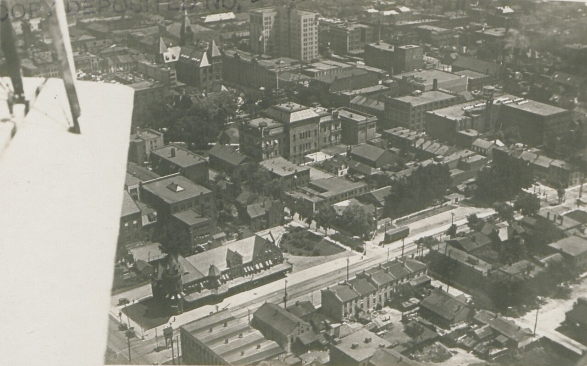
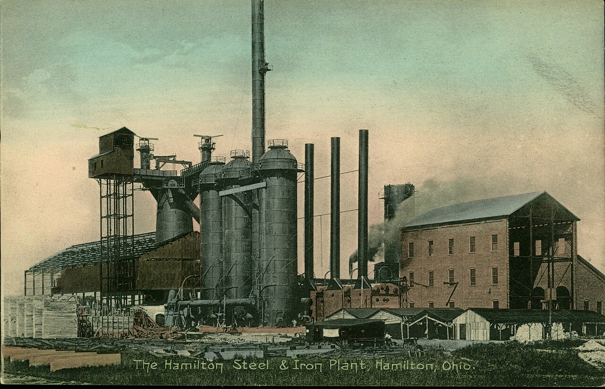
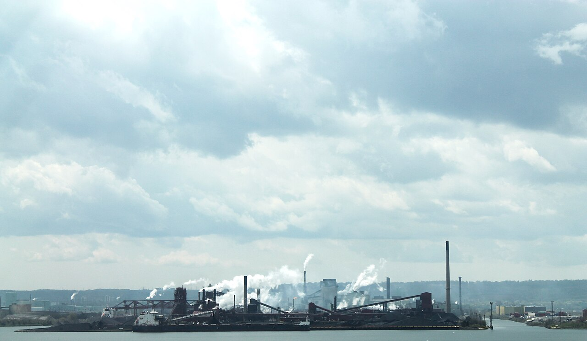
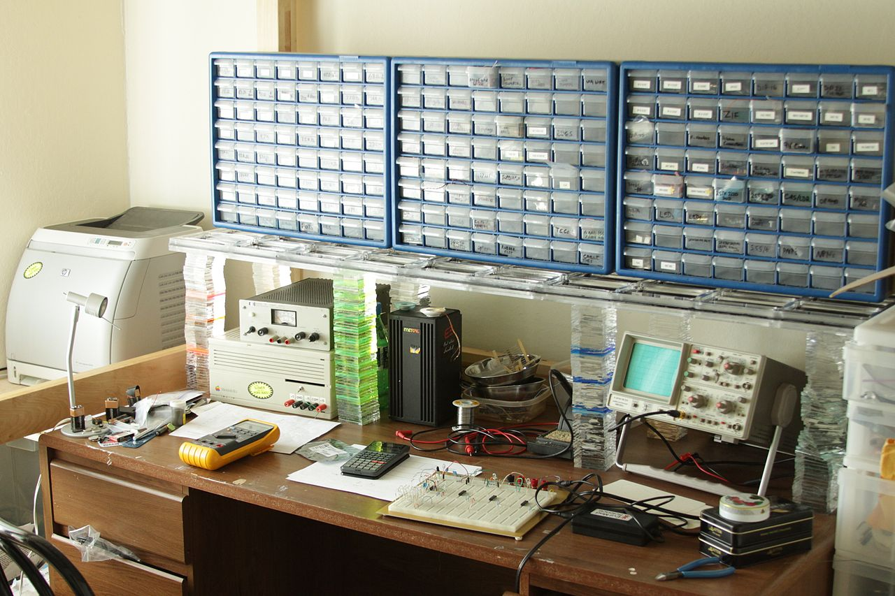
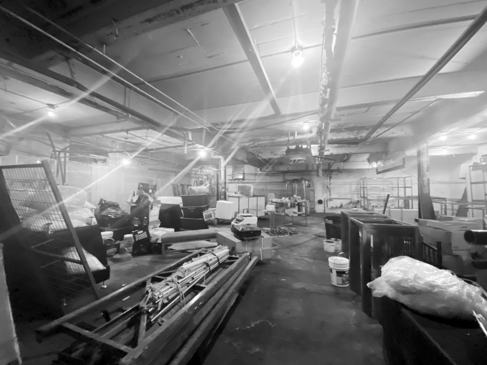
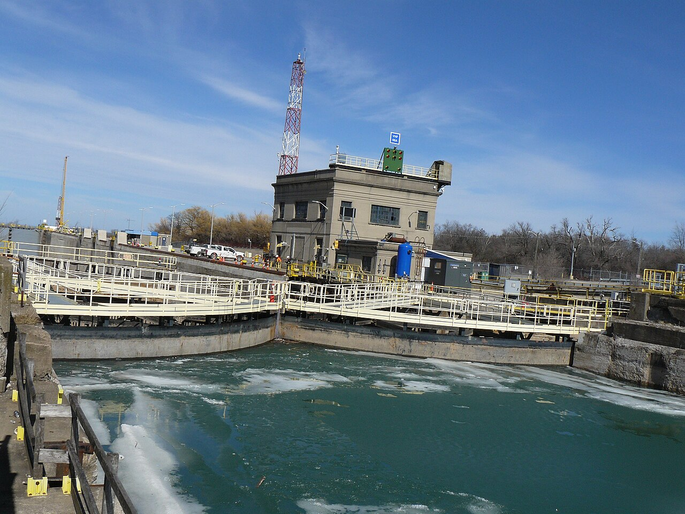
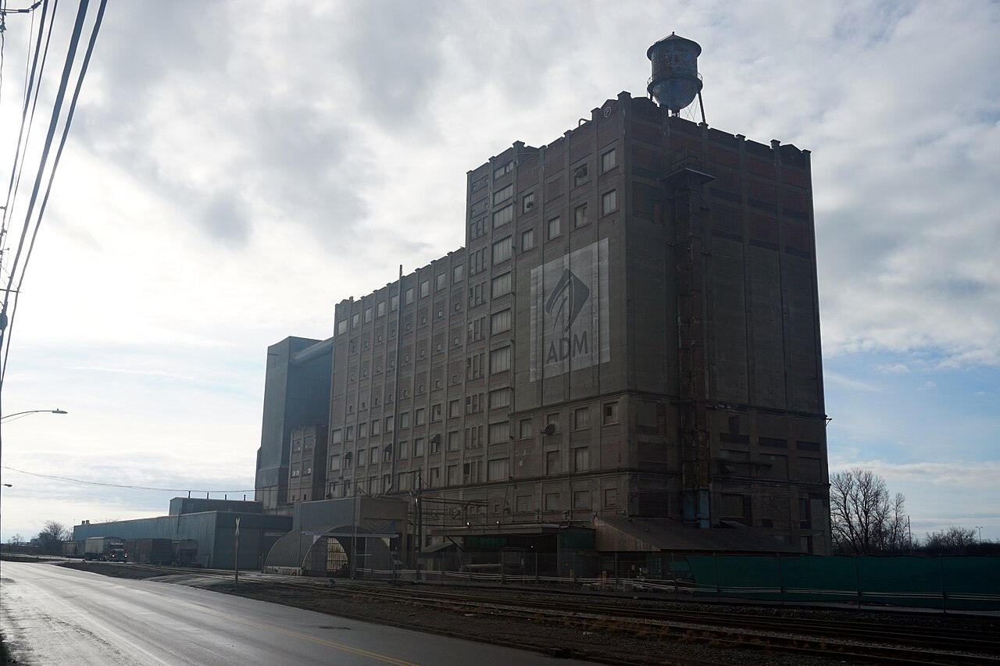
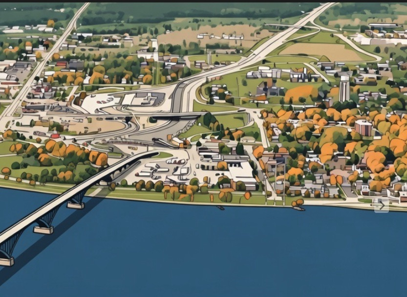

The building that made the elevators got a heritage plaque before the lots behind it got a single new building.
It stands at the corner of Victoria Avenue North and Ferrie Street East in Hamilton, Ontario — three storeys of 1929 brick, Edwardian Classicist, built as the Canadian headquarters of the Otis-Fensom Elevator Company. During the Second World War the complex behind it made munitions. After the war, Studebaker moved in and built cars there for twenty years. In February 2025 the city designated the office building under the Ontario Heritage Act: a rare and representative example of an early-twentieth-century industrial office, the last structure standing from the complex.

Behind and around it lie roughly eighteen serviced industrial lots on twenty-six acres. They are graded. They have water, sewer, power, an approved plan of subdivision. The site was the largest brownfield remediation in Hamilton's history — years of work, finished around 2018. By that year, without any concerted marketing push, buyers were reportedly lined up for about half the lots.
Walking along Mars Avenue on the south side of the this area, regular family houses line the south side of the street while the empty remediated fields sit on north side of the street. If the area is developed in typical fashion, this houses will face the back lifeless side of the buildings. The bolder move is to orient the frontages to Mars Avenue and deal with deliveries and parking more creatively within the business park.
Eight years on, the lots remain unbuilt. The one thing rising on this ground where elevators and cars and munitions were made is a self-storage facility.
I have been walking this part of the city and reading its paperwork for a while now, and I want to be precise about what this report is and is not. It is not a story about Hamilton failing. Hamilton is simply where I am standing. The pattern I am going to describe — ready land, approved plans, real money, and nobody building — repeats across the industrial cities of Canada, the United States, and the United Kingdom, in rust-belt corridors and dock lands and former mill towns that all have strategies on the shelf and lots behind fences. This report starts in Hamilton because the evidence here is unusually clean: in one square kilometre, you can see every layer of the failure, documented by the institutions themselves.
This is the first field report of Clark. I'll explain what Clark is later in this report, but the short version is: Clark exists because of what these lots imply, and this document is its first act.
01Scarce Land, Sitting Still
Start with what this ground has. The Central Hamilton Business Park — formerly Freeman Industrial Park — is not marginal land. It sits at the western edge of the Bayfront Industrial Area, Hamilton's oldest and largest industrial district: 1,607 hectares on the harbour, more than 18,000 jobs, steel and food processing and port logistics still operating all around it.

And here is the number that should make the empty lots startling rather than sleepy: according to the city's own strategy documents, only about four per cent of the entire Bayfront — roughly sixty hectares — is actually vacant. The perception is of a half-abandoned industrial zone with land to spare. The reality is the opposite. Available, serviced, ready-to-build industrial land in the Bayfront is scarce. The CHBP lots are a meaningful fraction of all of it.
So: scarce land, fully remediated at great public and private expense, serviced, subdivided, with buyers reportedly lined up for half of it by 2018 — and unbuilt in 2026. Even demand, it turns out, does not convert on its own.
When land like this sits idle long enough, it does not stay empty. It fills with whatever requires no ecosystem: storage, parking, yards. Uses that ask nothing of the place and give almost nothing back — no apprentices, no suppliers, no reason for the next builder to come. The self-storage facility is not a villain. It is a symptom: the default future of activated land in a deactivated place.
There is one more detail from the city's planning file that I cannot improve on. When the subdivision was approved, heritage staff attached a special condition: before any building permits are issued, the industrial history of the site — Otis, Studebaker — must be commemorated, with a plaque, murals, or salvaged artifacts as public art. The commemoration is ready and waiting. The buildings it would attach to do not exist. We have, in effect, pre-approved the celebration of an industrial revival that no one has shown up to perform.
02Forty-Seven Actions
Now lift your eyes from the lots to the paperwork that governs them, because the second layer of the failure is just as well documented.
In September 2022, Hamilton's council approved the Bayfront Industrial Area Strategy — a forty-five-year vision built on years of consultation and a Deloitte market study. The vision statement: "A modern industrial campus for innovation, clean industry, resilience and progress." Deloitte's assessment was genuinely bullish: "The Bayfront continues to be in a stronger position than is commonly perceived by the market… from steel to advanced manufacturing, The Bayfront can once again emerge as Hamilton's innovation hub." The strategy names the target sectors — machinery, clean tech, life sciences, additive manufacturing — and explicitly flags the reshoring wave as Hamilton's opening.
It even maps the conversion of this exact ground. The strategy's "Areas of Potential Change" lead with the edge areas, the first being the lands around the Keith neighbourhood — the city's official designation for this district is Industrial Sector A and Keith — flagged for transition "from vacant or under-utilized uses to a range of more compatible employment-based uses."
The strategy contains forty-seven actions. In June 2025 — two and a half years after approval — council received the first progress update on it. The scorecard, as of the end of 2024: six achieved, thirteen initiated, twenty-eight not started. Progress tracking itself had been paused in early 2024 "due to internal challenges." The first meeting of the strategy's technical advisory committee took place in December 2024, more than two years after approval. The next update to council is due this spring.
Six of forty-seven.
One more fact about that update, and it may be the most telling one in this report: as far as I can find, no local outlet covered it. The city audited its own flagship industrial strategy, reported that most of it had not started, and the news landed nowhere. The evidence layer this report is trying to be does not currently exist — not in the institutions, and not in the press.

I want to be careful here, because this is the point where reports like this usually turn into a flogging of city hall, and that is not my argument. Nothing in those numbers is unusual. That is the argument. A forty-seven-action strategy executing at this pace is the normal output of a planning system working as designed. The people involved are not failing at their jobs; their jobs were never to be the mechanism that converts a strategy into people building things. Read the strategy carefully and you discover that no one's job is that.
Which brings me to the most important six lines in the whole document.
03Action 42
Within the strategy is a theme called "Creating an Advanced Manufacturing and Innovation Campus." Its scorecard at the end of 2024: zero actions achieved, five not started, one initiated — and the initiated one concerns pedestrian and cycling amenities.
The first action under that theme, Action 42, classified short-term, reads:
"Form partnerships with local institutions to create space for start-up research and innovation opportunities working towards creation of a physical and digital campus. These partnerships will also work towards bridging education and employee training programs with businesses in the area."
— Bayfront Industrial Area Strategy, Action 42 · Status: not started
It has not started.
Read it again. The city has already written down, approved, and classified as urgent the precise missing piece: a working space where research, training, and area businesses meet. It is the one action in the forty-seven that nobody in the existing institutional landscape is shaped to execute — not the planning department, not the economic development office, not a developer, not a college acting alone. It sits unstarted not because it was forgotten but because it has no natural owner.
This report is, among other things, an answer to Action 42.
04The Missing Layer
Step back from Hamilton now, because the diagnosis is structural and travels.
Industrial revival, as practised across Canada, the US, and the UK, runs on a standard sequence: produce a strategy, assemble resources — land, grants, tax increments, anchor institutions — then wait for builders to appear. Strategy, resources, builders, in that order. The first two steps have entire professions devoted to them. The third step is assumed.
Hamilton's western Bayfront is what the assumption looks like when audited. The plan layer is complete and approved. The land layer is remediated and serviced. The market layer was validated by one of the world's largest consultancies. And the conversion of all that into human beings making things is running at six of forty-seven actions and zero buildings — because conversion is no one's discipline. There is no role in the system whose work is to stand on the lot, find the person who could build, lower the cost of their first attempt, make their progress visible, and connect the evidence to the resources.
Consider the control group, because it is already on site. The self-storage facility got built. It got built because it needed no ecosystem — no trained workers, no suppliers, no customers within a hundred kilometres, no Action 42. Everything the strategy wants needs all of those things, and nothing in the system supplies them. That is the whole gap, visible from one street corner: what requires no ecosystem rises; what requires one waits.
This is not a funding gap or a zoning gap. It is a missing layer: the layer between resources and builders. Every comparable city I have looked at with a stalled industrial strategy is missing the same layer, which is why fixing it is not a Hamilton project, or even a Canadian one.
And the prize for fixing it is bigger than filled lots. A place with working benches, rising builders, and a live map of its own ground can absorb a reshoring order, a tariff shock, or a procurement wave in months instead of planning cycles. Speed of change is the scarcest industrial capability of this decade. That — not any single building — is the regional product Clark is after.
05What Clark Is
Clark is an attempt to build that layer as a deliberate, repeatable practice — a protocol, not a place. It is being designed to work in any jurisdiction with the Hamilton pattern, which is to say most of the industrial Anglosphere; where it incorporates matters far less than where it works. It begins in Hamilton because this is where I am standing, and because the western Bayfront may be the best-documented instance of the pattern anywhere.
The protocol inverts the standard sequence. Instead of strategy → resources → builders, Clark runs:
observation → evidence → micro-action → capability → resources
You do not start by asking for the land or the grant. You start by looking, in person; you publish what you see; you take the smallest real action the evidence supports; the action builds capability; and capability — demonstrated, documented — is what unlocks resources. Resources arrive last, attached to proof.
One question before the mechanics, because a fair skeptic will ask it: why electronics? Why not a welding bay, a woodshop, a machine shop?
Because electronics is the oxygen of modern industry. It is no longer a sector among sectors; it sits inside every industrial operation and, increasingly, inside every industrial product. The machines that make things run on embedded control; the things they make ship with sensors, firmware, and connectivity. An industrial ecosystem without local electronics capability is breathing through a straw — every product pivot, every process adjustment, every retrofit waits on a distant supplier's queue. Put that capability locally and the loop tightens: a manufacturer can test a pivot in days — prototype the board, flash the firmware, instrument the line — and every solved problem leaves expertise behind. Expertise compounds into regional advantage; the place gets faster at change itself. And in a city ringed by steel, food processing, machinery, and port logistics — every one of them electrifying and instrumenting — that compounding leads to orders: first regional, then further, because small-batch electronics is one of the few industrial activities where a single bench in a mid-size city can credibly serve customers on other continents. Electronics also happens to be the highest-leverage, lowest-footprint capability per dollar and per square metre, and it touches every sector on the Bayfront strategy's own target list. That is why the entry vector is a bench and not a bay.
Concretely, in Hamilton terms:
A bench
Clark's first physical move is not a campus or a flagship — it is a single working electronics assembly and training bench, equipped to industry standard for ten to twenty-five thousand dollars, placed somewhere visible in or near Sector A, run in public. People learn certified assembly skills at it; small real jobs run across it; anyone can walk up and watch. None of this is exotic. EPTAC runs IPC-certification training hubs across North America and delivers courses on customers' premises; BEST Inc. operates the only travelling solder-training classroom in the United States; Germany's Lernfabriken — learning factories at TU Darmstadt and inside Festo's own plants — have proven for nearly two decades that one realistic working cell teaches better than a classroom. Every component of the bench already exists somewhere as a business. What does not exist is one placed in public, on ground like Sector A, run as the opening move of an activation loop. One bench is the minimum viable version of Action 42's "physical campus," at roughly one-thousandth the cost of the flagship building the strategy schedules for the long term. It is theatre and it is production, deliberately both — because the visibility is what recruits the next builder.

A ladder
Everyone who engages with the bench has a path: watch, then assist, then build, then run something. Advancement is earned by artifacts — things actually made — not by enrolment. This is the "bridging education and employee training programs with businesses" clause of Action 42, executed at the scale of one bench instead of deferred to the scale of a campus. But the ladder teaches more than assembly. Standing inside a working bench, a student learns what a supply chain, a tariff, a remediation, and an order book actually are — direct education in the industrial and resource economy, with reports like this one as the textbook layer. The timing matters: Ontario's colleges lost roughly $1.8 billion in revenue this year and suspended some six hundred programs, Hamilton's own Mohawk College among those cutting. I say that without satisfaction — colleges are natural partners here, and Clark wants them at the bench. But it means the question of where practical industrial education happens is open again, and a bench that issues industry-recognized credentials for hundreds of dollars rather than enrolment-years is one honest answer. Education priced and shaped by what the ground needs is where training is going. The bench intends to be early.
A registry
Clark maps ground truth: which lots, floors, and bays are genuinely available, serviced, and idle — starting with the fact that only four per cent of the Bayfront is vacant and a chunk of it is behind one fence at Victoria and Ferrie. Not a real-estate listing; an activation map, maintained by people on the ground, pointed at the question what could start here next month? This instrument is not hypothetical either. A working demonstration already runs at atlas.babb.tel — an industrial atlas, currently pointed at UK data, that layers open mapping, valuation-register gap-finding, and brownfield and heritage records to surface hidden and under-used productive space. Pointing it at the Bayfront is configuration, not invention. The precedents for what a registry becomes are equally concrete: London's Meanwhile Space has put eleven hundred occupants into sixty idle buildings and saved landlords over a million pounds in empty-property rates; Renew Newcastle filled seventy projects into a dead downtown on thirty-day licences and wound itself down after reviving the market. A map with an activation arm changes ground. A map alone is a screenshot.
Reports like this one
Clark publishes what it observes and what it does — and only what it does. The discipline is structural: no action, no amplification. The publishing is not marketing for the protocol; it is the protocol's evidence layer, the thing that lets resources flow to proof instead of to pitch decks. Here too the parts exist separately: media operations have turned trusted coverage into data products and marketplaces, and newsrooms like ProPublica have made open, inspectable databases a public instrument. Nobody has pointed that stack at industrial ground — which is exactly the gap the uncovered June 2025 update proves.
Each of these fragments works somewhere today. Nobody runs them as one loop: bench produces builders, builders need space, the registry knows where the space is, the reports make all of it legible to the institutions holding Action 42 and the owners holding the land. The loop is the invention. Then it repeats.
One more thing about cost, because the contrast is the point. Hamilton has already paid for almost everything this requires. The remediation money is spent. The consulting fees are spent. The planning years are spent. The strategy, the subdivision, the servicing — paid, paid, paid. What Clark proposes costs about one-thousandth of the strategy's flagship building and redeems the rest of the ledger. Everything is already paid for except the people.

06The Peninsula, and the Hinge
The natural first geography for this loop is not a city but a peninsula. Hamilton sits at the head of the Niagara Peninsula — an arc of mid-size industrial towns running through St. Catharines, Thorold, Welland, and Port Colborne to Niagara Falls and Fort Erie, and rolling across the river into Buffalo and Western New York. The towns share one inheritance: water, rail, power, plants, and stalled renewal plans. The border in the middle is a feature, not a complication — two funding systems, two markets, one geography.
What that arc wants to be is a distributed production zone: many small and mid-size nodes rather than one hub. For the products of reshored, agile manufacturing — small batches, fast turns, specialized work — distributed is not the consolation prize for lacking a metropolis. It is the better-fit architecture. A protocol that works across those nodes, and across that border, has demonstrated the thing that matters: that it is genuinely a protocol, not a local arrangement.
But one node proves only a bench. Two nodes prove a protocol — because two generate what one cannot: comparison, exchange, redundancy, a route for orders and people to flow, and proof that the model is not an artifact of one city's politics. So the question this report plants, for Field Report 002 to take up, is: which counterweight town first? Buffalo, for the binational proof? St. Catharines or Welland, for the low-friction intra-peninsula version? Niagara Falls, New York, for the highest need? I am not going to adjudicate that from a street corner in Hamilton. I am going to go look.


And Hamilton faces two directions, which is precisely why it is the right place to stand. East, the peninsula. West, the 403 runs into southwestern Ontario's manufacturing belt — Brantford, Woodstock, London, St. Thomas, Windsor — which is about to take serious load out of plain provincial necessity. London builds armoured vehicles for a country that has just adopted its first Defence Industrial Strategy and committed to buying Canadian; St. Thomas, thirty minutes south, is pouring foundations for the country's largest battery plant. Both are electronics-hungry stories: fighting vehicles and battery cells are embedded-systems products, and their supplier tiers will need exactly the small-batch assembly, test, and retrofit capability a bench network seeds. Ontario says it wants to triple its defence workforce by 2035; Ottawa is funding the retraining of tariff-hit steel and auto workers — Hamilton's workforce, by name. The tailwinds are real and I note them in passing, because none of those programs can purchase the thing this report describes. They can only reward it once it exists. Hamilton is the hinge between the two arcs, and a capability proven at Victoria and Ferrie has two natural directions to travel.
The UK's industrial towns present the same pattern in a third jurisdiction — the atlas already maps them — and conversations there belong to a later report, after Hamilton has produced evidence worth carrying. That order is deliberate. Clark does not scale by announcing itself in three countries. It scales the way this report was made: observe one ground truthfully, act on it, publish what happened, and let the next place ask.
07What Happens Next
To the City of Hamilton: your spring update on the Bayfront strategy is coming. Action 42 can move from "not started" to "initiated" with one partnership and one bench. Clark is available to be that partner, on this ground, this year.
To the owners of the lots at Victoria and Ferrie, and of idle floors anywhere on the peninsula: your land's value is not waiting on a market cycle; it is waiting on an ecosystem. A bench, a cohort, and a published record of activity around your site is the cheapest appreciation strategy you will ever be offered.
To anyone in Hamilton, Buffalo, or anywhere along the arc who has wanted to make things and found every door institutional: the bench is being built for you. Watching is a legitimate first step. So is writing to us about a building we should know about.
And to the heritage condition sitting in the city's file — the plaque waiting for a building permit: the most honest commemoration was never going to be a mural. Otis moved the world vertically; Studebaker moved it horizontally. The fitting tribute on this ground is a bench making the small electronic things that now make everything move — and the sound of that work starting.

This is Field Report 001. Field Report 002 will tell you what happened next — and only what happened.